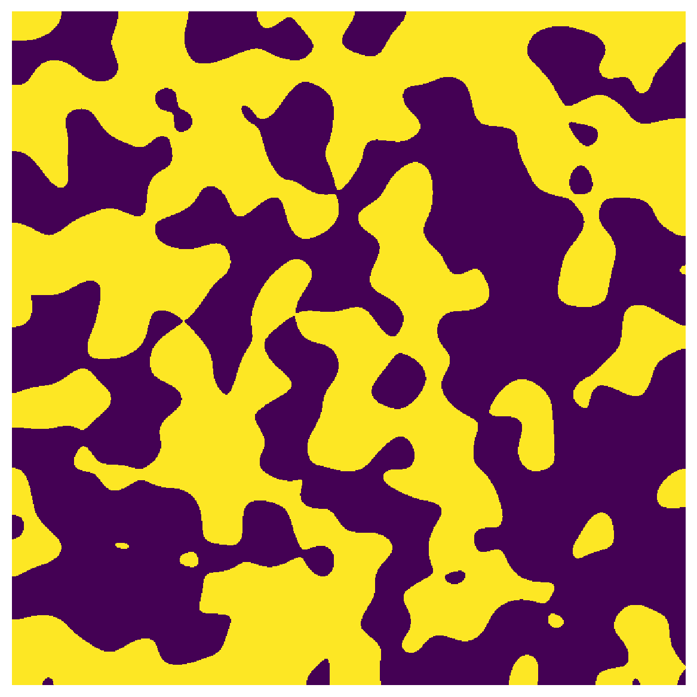
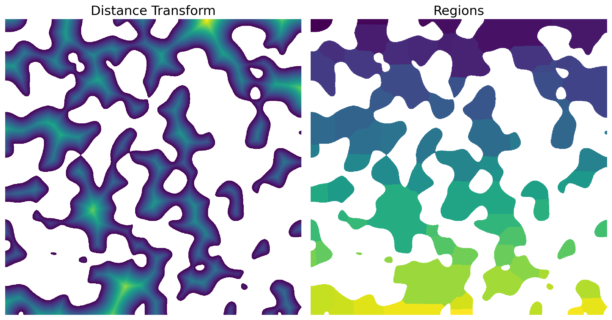

snow_partitioning_parallel#
Similar to snow_partitioning except that it performs SNOW algorithm in parallel and serial mode to save computational time and memory requirement respectively.
Import packages#
import numpy as np
import porespy as ps
from porespy.tools import randomize_colors
import matplotlib.pyplot as plt
import matplotlib.gridspec as gridspec
import time
ps.visualization.set_mpl_style()
np.random.seed(10)
[12:34:39] ERROR PARDISO solver not installed, run `pip install pypardiso`. Otherwise, _workspace.py:56 simulations will be slow. Apple M chips not supported.
im#
Works on 2D and 3D images. We use 2D here because it is easier to visualize.
im = ps.generators.blobs(shape=[800, 800])
plt.figure(figsize=[6, 6])
plt.axis(False)
plt.imshow(im);

overlap, divs, and cores#
cores is the number of cores to use. The more cores the faster the snow_partitioning performs. If overlap is None it is estimated using porespy.tools.estimate_overlap method. The domain is divided by 2 in each direction as supplied to divs.
start = time.time()
x1 = ps.filters.snow_partitioning_parallel(im, r_max=5, sigma=0.4, divs=2, overlap=None, cores=1)
pause = time.time()
x2 = ps.filters.snow_partitioning_parallel(im, r_max=5, sigma=0.4, divs=2, overlap=None, cores=4)
stop = time.time()
print('OPERATION TIME:')
print('cores=1:', pause-start, 'seconds')
print('cores=4:', stop-pause, 'seconds')
OPERATION TIME:
cores=1: 4.516785383224487 seconds
cores=4: 0.6624331474304199 seconds
The snow algorithm returns several images
print(x1)
――――――――――――――――――――――――――――――――――――――――――――――――――――――――――――――――――――――――――――――
Results of snow_partitioning_parallel generated at Wed Oct 25 12:34:44 2023
――――――――――――――――――――――――――――――――――――――――――――――――――――――――――――――――――――――――――――――
im Array of size (800, 800)
dt Array of size (800, 800)
regions Array of size (800, 800)
――――――――――――――――――――――――――――――――――――――――――――――――――――――――――――――――――――――――――――――
Plot the results
fix, ax = plt.subplots(1, 2, figsize=[12, 12])
ax[0].axis(False)
ax[0].imshow(x1.dt/im)
ax[0].set_title('Distance Transform', fontdict={'fontsize': 18});
ax[1].axis(False)
ax[1].imshow(x1.regions/im);
ax[1].set_title('Regions', fontdict={'fontsize': 18});
